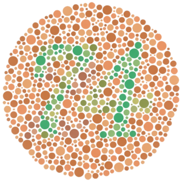
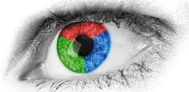
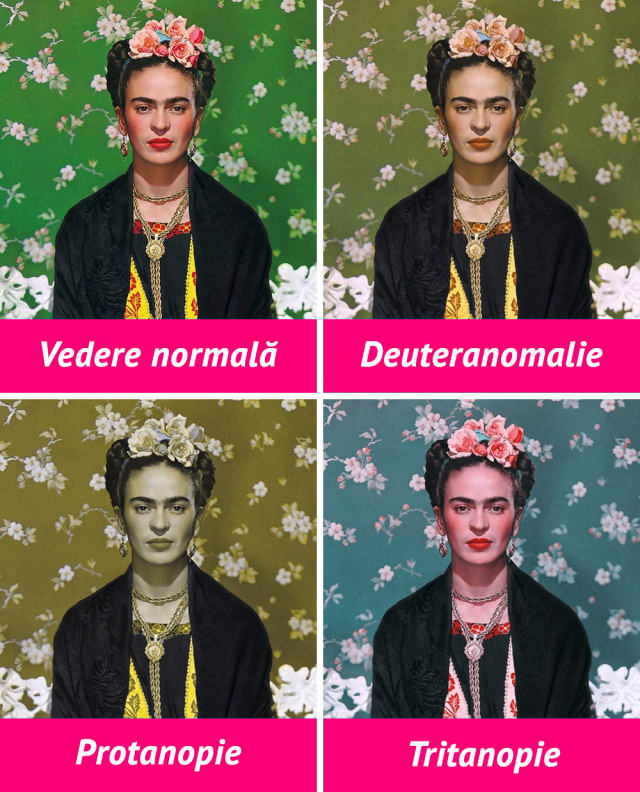

Genetica umană
Daltonismul
Daltonismul, denumit științific cecitate cromatică, este o stare patologică, o tulburare a vederii cromatice, constând în incapacitatea de a deosebi unele culori de altele (mai ales roșu si verde)(complementarele), deoarece fie receptorul responsabil pentru culoarea verde fie cel pentru culoarea roșie nu funcționează deloc și astfel persoanele văd în negru sau gri


8% dintre bărbați și 0,5% dintre femei suferă de daltonism. Mai mult de 150 de ocupații profesionale (ex. giuvaergiu, căpitan de vapor, ofițer de poliție) nu sunt permise daltoniștilor și practic în toate domeniile vieții aceștia se pot găsi în situații defavorabile lor.
Trebuie totuși să facem diferența dintre cuvintele daltonism și discromatopsie, conceptul din urmă fiind mai rareori folosit tocmai din cauza caracterului său mai științific. Diferența constă în faptul că în cazul persoanelor discromatopsice toți receptorii cromatici sunt funcționali, în timp ce în cazul daltonismului receptorul responsabil pentru culoarea verde sau cea roșie nu funcționează deloc.
Cecitatea pentru roșu se numește protanopie iar cecitatea pentru verde deuteranopie. Aceste forme de cecitate exprimă faptul că persoanele respective confundă roșul cu verdele și chiar cu alte culori de aceeași strălucire sau saturație cum ar fi albastrul sau cenușiul. Pentru investigarea tulburărilor cromatice se folosesc planșe pseudoizocromatice stilling, ishihara sau atlasul polack. Aceste probe sunt alcătuite din planșe pe care sunt prezentate prin cerculețe de mărimi, culori și nuanțe diferite cifre, litere sau figuri. I se prezintă subiectului pe rând aceste planșe și i se cere să identifice cifra, litera sau semnul imprimat. Aceste planșe sunt astfel realizate încât ochiul normal le poate citi clar, în timp ce persoanele care suferă de cecitate cromatică identifică cifrele, literele sau semnele cu greutate, incorect sau deloc
Daltonismul poate fi corijat, folosind o lentilă acoperită cu un strat specific. Acest strat a fost proiectat inițial așa încât să schimbe spectrul luminii care îl traversează
în așa fel ca acesta să stârnească un stimul în persoana discromatopsică asemănător celui din persoana cu vedere cromatică sănătoasă.La proiectarea stratului trebuie să se aibă în vedere ca acesta să-și exercite efectul pe lungimile de undă medie (roșie-verde), în timp ce pe lungimile de undă scurtă (albastră) efectul său să fie cât mai redus. Folosind lentilele de corecție, daltoniștii pot să perceapă și nuanțele cromatice pe care anterior nu le puteau observa. În 80% din cazuri daltonismul se poate corija în totalitate.